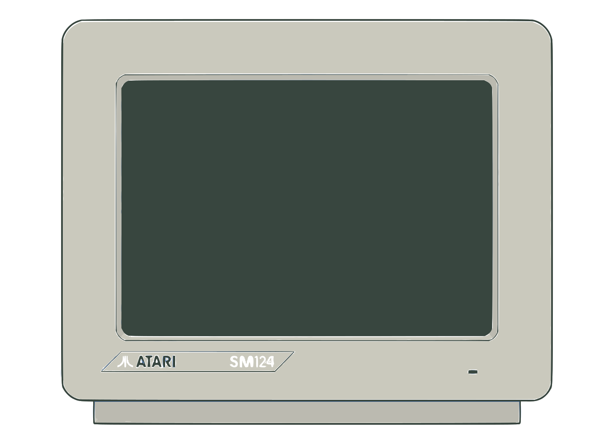
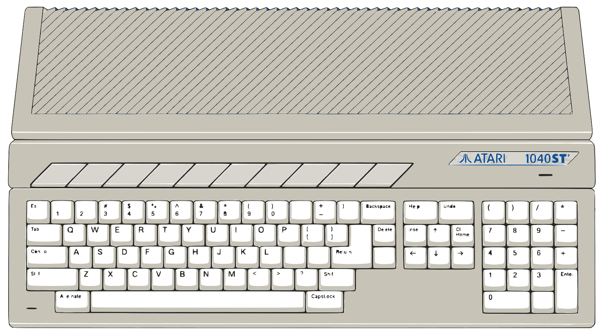
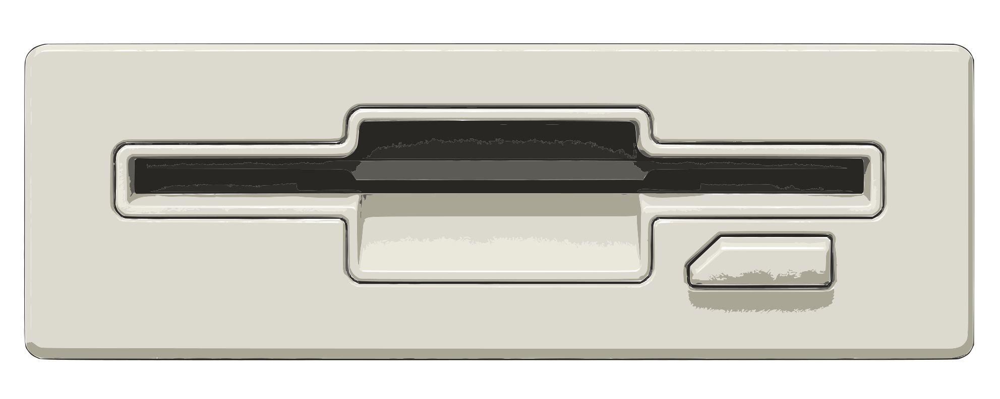

♜
ATARI ST
1 Mo RAM | TOS 1.04 | HATARI WASM

▣ Lecteurs de disquette A / B

A:Vroom (1991)
B:Vide
◈ Contrôleurs 2 ports + souris
J1 ● ACTIFFlèches · FIRE `
J2 ● OFFIJKL · FIRE =
Prototype visuel — émulateur non connecté
Bibliothèque de disquettes
Choisis un jeu dans la bibliothèque latérale, puis insère-le dans le lecteur A ou B. La boîte verticale de disquettes V9 est affichée dans la bibliothèque latérale.
Contrôles
Joystick 1 — noir / jaune
Flèches directionnelles · FIRE = `
Directions et FIRE activables individuellement dans les réglages détaillés.
Joystick 2 — noir / rouge
IJKL · FIRE = =
Les touches en conflit avec le Port 1 seront refusées.
Souris
Prototype d'organisation : les réglages fins seront raccordés aux commandes Hatari dans une phase ultérieure.
Profils
Sélectionne un profil de périphériques. Le changement de profil ne modifie pas les disquettes montées.
Profil actif : Jeux
Dernière session
Aucune session sauvegardée dans ce prototype.
Options d'interface
Animations
Bibliothèque ouverte au démarrage
Densité de l'interface
Les préférences de ce prototype sont locales à ce navigateur.